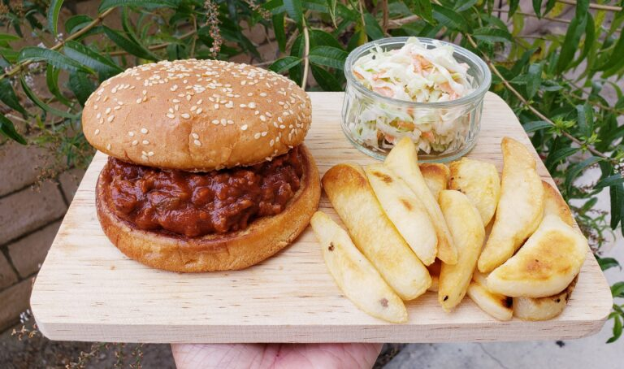

Sloppy Joes Burger

Description
Get ready to indulge in a mouthwatering Sloppy Joes Burger –
a juicy, perfectly seasoned beef patty nestled between a toasted, golden-brown bun,
generously topped with homemade Sloppy Joe mixture. This savory, tangy sauce is
a medley of rich tomato, finely chopped onions, and bell peppers, infused with a
blend of spices for an irresistible kick. Each bite is a delightful explosion of
flavors and textures, making it the perfect hearty meal to satisfy your cravings
and bring back nostalgic memories of family dinners. Pair it with crispy fries,
coleslaw, and a cold drink for the ultimate comfort food experience!
Ingredients
- 1 Tablespoon Vegetable Oil
- 1 Pound Ground Beef Sirloin ( 90% Lean / 10% Fat )
- 1 Tablespoon Minced Garlic ( Equals to 3-4 garlic cloves )
- 1/2 Of A Small Yellow Onion ( Equals to 1/3 cup chopped )
- 1/2 Of A Green Bell Pepper ( Equals to 1/2 cup chopped )
- 5 Mushrooms (Equals to 2/3 cup chopped )
- 1/4 Teaspoon Garlic Salt
- 1/4 Teaspoon Onion Powder
- 1/4 Teaspoon Black Pepper
- 1/2 Teaspoon Red Pepper Flakes ( Optional )
- 2 Cans Hunt’s Manwich Original Sloppy Joe Sauce ( 15 oz each )
Also needed:
- 6 Sesame Seed Hamburger Buns
- Un-salted Butter
- Tabasco ( Optional )
Steps
- Mince the garlic.
- Chop the onion and bell pepper.
- Chop or slice the mushrooms.
- On medium-high heat add a tablespoon of cooking oil to a pan.
Once the oil is hot, toss in the chopped onions and minced garlic.
Saute for about 30 seconds or until the onions are translucent.
- Add the ground beef to the pan and break the meat apart with a spatula.
- Cook the beef until it is half way done. Then season the beef with garlic salt,
onion powder, black pepper and red peper flakes. Give it a quick stir.
- Then toss in the green bell peppers & mushroom. Stir to combine everything
and cook for 3 minutes.
- Drain the fat.
- Then pour in the 2 cans of sloppy joe sauce. Stir to combine. Bring to a boil.
- Then reduce the heat to medium-low, cover and simmer for 10 minutes.
Stirring often to prevent splattering.
- When done, give it a stir then turn off heat.
- Give it one last sprinkle of black pepper over meat sauce. Do not stir. Set aside.
- Coat the bottom of the pan with some butter. Turn your heat on to medium and
once the butter has melted place the buns in the pan.
- Swirl the buns around the pan so that the bottom of the buns are evenly coated
with the butter.
- Toast the bottoms of the buns until they are lightly browned and crispy.
This will prevent the bread from getting soggy once you place the sloppy joe sauce
onto the buns. Plus it will make your buns extra delicious! 🙂
- Spoon some of the Sloppy Joe on top of the bread.
- Add tabasco hot sauce if you'd like some heat.
- Serve immediately and enjoy!